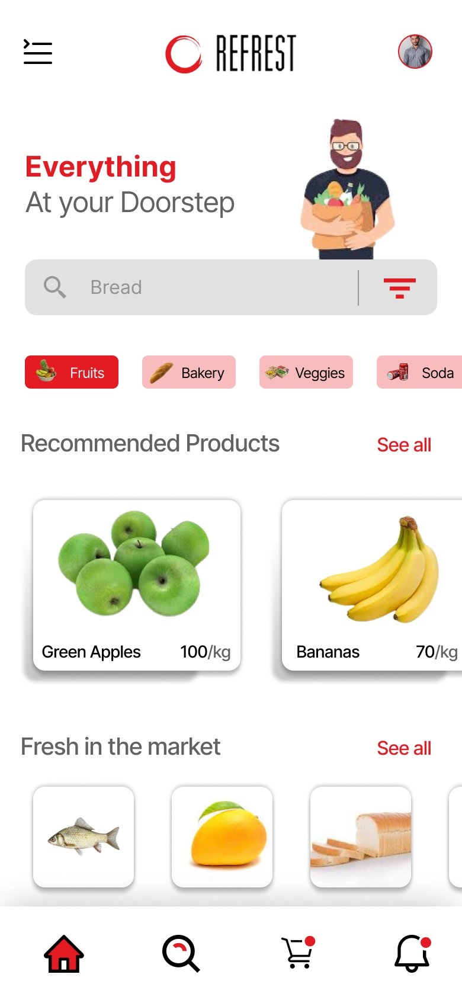

← Back to portfolio
REFREST — Grocery Delivery App
Type: UX case study (Figma) · Scope: Research → Wireframes → Hi-fi UI
An end-to-end case study for a grocery delivery app ("Everything at your doorstep"), covering the full process from user research through to a polished mobile UI.
Process
The Figma file is organized as a real design process, not just screens:
- User research — a persona and a written problem statement anchor the rest of the design decisions.
- Wireframes — low-fidelity structure for the core flows before visual design.
- Hi-fi UI — a full mobile app: home/browse, category filters, recommended products, search, cart, and account.
Home screen
Category shortcuts (Fruits, Bakery, Veggies, Soda), recommended products, and a "Fresh in the market" section — optimized for fast re-ordering of everyday items.

Notes
- Figma file also includes a second assignment page with additional flows.
Figma file: https://www.figma.com/design/IFo2dxaouXo0BVl67VsDoK/